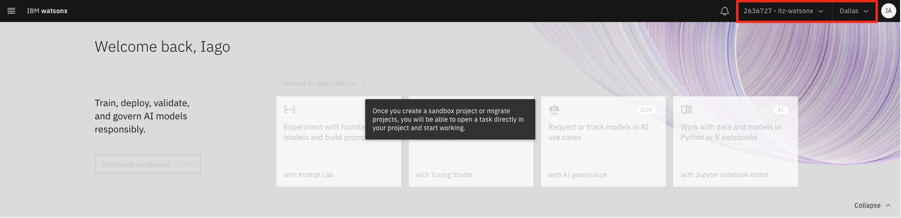
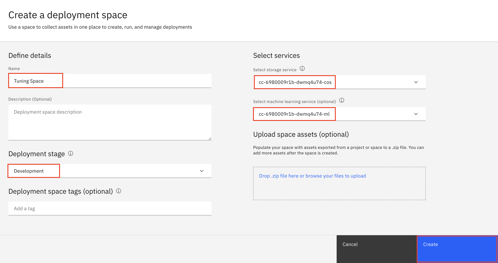
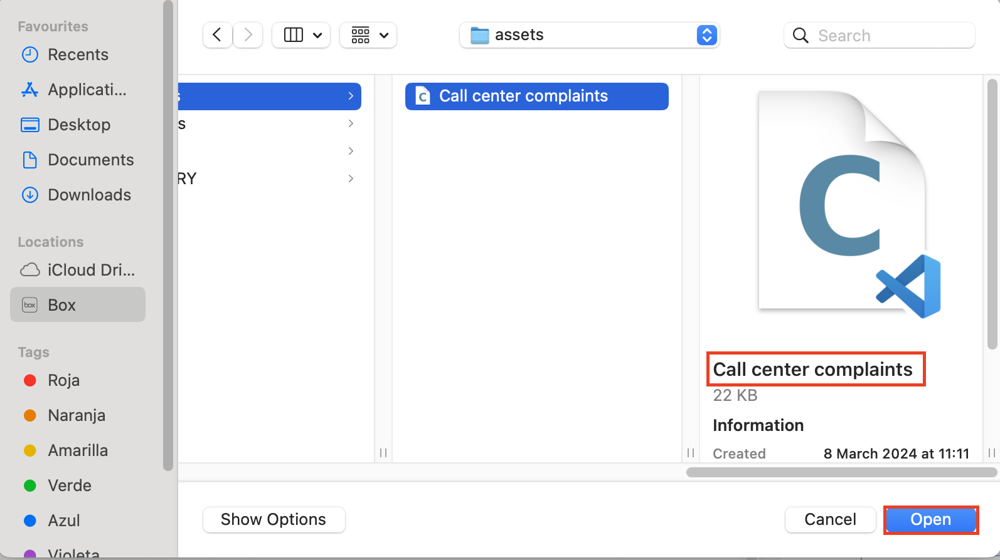

Tuning Generative AI: Prompt Engineering vs Prompt Tuning
In this session
We are going to work on a use case where prompt engineering has a hard time getting the desired outputs. On the other hand, we will apply prompt tuning to analyze the results generated. For this, we will use Prompt Lab to perform prompt engineering and evaluate the model outputs, and on the other hand, Tuning Studio to run the prompt tuning experiment, creating a tuned version of an existing foundation model. These two resources are available at IBM watsonx.ai.
A classification use case
Consider the following classification use case. Suppose you are tasked with automating the triage of incoming complaints (a classification task). For your company, you need to route a complaint to all applicable departments among the following:
- Planning
- Development
- Service
- Warehouse
- Level 3 (L3 for short)
- Packaging
- Marketing
Some business rules exist for each department. Some of these include:
- Service/Support complaints go to Service.
- Skills issues that need support go to Service and L3.
- Out-of-stock/missing items complaints go to Warehouse and may involve Packaging.
- If the item is being discontinued, the complaints go to Warehouse and Planning.
- Missing feature requests go to Planning and Development.
- Complaints that are related to the perception of what the business does or does not provide go to Marketing and may involve Planning and Development.
- And more … based on your business process.
This is a good generative AI use case as a large enterprise must handle lots of complaints and they must be routed properly to the correct department for rapid response. Such routing tasks need to be automated without spending a large number of human resources. Generative AI is also better at handling incoming complaints in natural language.
However, there are complexities with this use case. Large Language Models (LLMs) are very good at classifying with single labels (such as positive vs. negative sentiments) but will have a tougher time with business categories which may have very different meanings than the training data for the LLM.
In this case, sometimes the business requires multiple labels output, and there is specific business logic for why a particular output label is used. Prompt engineering, as you will discover, will have a tough time properly classifying all complaints. In prompt tuning, instead of human-generated hard prompts, a user provides a set of labeled data to tune the model. For this example, you will provide a list of sample complaints and the associated departments to be notified. Watsonx.ai will tune the model using this data and create a “soft prompt”. This does not change any of the existing model weights. Instead, when a user enters a prompt, it is augmented by the soft prompt and is passed to the model to generate output.
Next, we can see a series of examples of the training dataset (in JSONL format) that we will use to execute prompt tuning:
Connecting to the environment
-
Click on this link to access the watsonx platform.
-
Onces the watsonx console is opened, make sure to select the IBM Cloud account where you were invited, and the correct location (Dallas).

Create a watsonx.ai project and deployment space
-
From the watsonx.ai console (Home window), click + to the right of Projects to create a new project.

-
Name the new project as <Your Initials> Tuning Workshop (where <Your Initials> is your name initials [i.e. John Smith would be JS]). Make sure the storage service is automatically selected. Then, click Create.
-
Next, you will link the Watson Machine Learning service to this watsonx project. To do this, move to the Manage window of the project. Select Services & Integrations and click Associate service +.

-
On the next screen, select the Watson Machine Learning instance that is provided throught TechZone.

-
Once associated, let's go back to the watsonx.ai console by opening the left side window and clicking Home.
-
Click + to the right of Deployment spaces to create a new deployment space.
-
Name the new deployment space <Your Initials> Tuning Space. Select Development as Deployment stage. Make sure a storage service is selected (should be automatically selected when using a TechZone reservation). Select the machine learning service available with the TechZone reservation. Click Create.

-
Wait until the deployment space is created and then click Close.
-
Once created, let's go back to the watsonx.ai console by opening the left side window and clicking Home.
Prompt engineering vs Prompt tuning with Flan models
Let's start by doing prompt engineering with the small flan model, flan-t5-xl-3b. Then we will perform some tests with the large flan model, flan-ul2-20b. Finally, we will run a prompt tuning experiment on flan-t5-xl-3b, and perform an evaluation of the outputs in the prompt lab.
Download the training dataset
-
Download the following dataset. Use right-click -> download to save the file in your workstation:
Running Prompt tuning experiment
-
From the Home window, open the new project previously created by clicking in Tuning Workshop.
-
First of all, we're going to start the execution of prompt tuning with flan-t5-xl-3b while we perform prompt engineering. In the Overview window, let's open the tuning studio by clicking Tune a foundation model with labeled data.
-
Name the tuning experiment as Tuning flan-t5-xl-3b and then click Create.
-
Click Select a foundation model.
-
Select flan-t5-xl-3b model.
-
Confirm model selection by clicking Select.
-
Select Text as the initialization method and copy and paste the following as the initial prompt.
Classify the following complaint and determine which departments to route the complaint: Planning, Development, Service, Warehouse, L3, Packaging, and Marketing.Info
You can use the copy button that appears in the right side of the code box as seen in this screenshot:
-
Select Generation as the task that fits our goal. We pick generation instead of classification because we need the LLM to output completion with multiple classifications. Generation is able to generate text in a certain style and format. The model will be trained with labeled data to output the proper completion.
-
The Add training data column appears. You can use the Browse button to add the Call center complaints.jsonl file.
-
Select the Call center complaints.jsonl file.

watsonx.ai will perform a quick verification check on the file. If there is any error message, you will need to fix the JSONL file and re-load the file.
-
Now, let's click on Configure parameters.
-
The Configure parameters page opens. For now, there is no need to modify the parameters, but it is important to take into account which are the default values. Click Cancel to exit this page.
-
Click Start tuning.
-
You are returned to the Tuning experiment. Note that this can take quite some time (between 5-10 minutes).
Performing Prompt engineering (OPTIONAL)
While we wait for the prompt tuning experiment to finish, we are going to perform prompt engineering with the flan models and evaluate the outputs obtained in each case.
-
Go back to the project by clicking Tuning Workshop on the top left. Then, go to Overview and click Experiment with foundation models and build prompts.
-
If the Prompt lab opens with the Structure mode, change to Freeform. Then, select the flan-t5-xl-3b model (open the foundation models library if required).
-
Let's start by performing zero-shot prompting. Copy and paste the next prompt and click Generate.
Classify the following complaint and determine which departments to route the complaint: Planning, Development, Service, Warehouse, L3, Packaging, and Marketing. Where are the 2 extra sets of sheets that are supposed to come with my order?Given the business use case and the background information, you want the model to respond with a completion of Warehouse and Packaging, but instead, the model returns a completion of Marketing. This is not an unreasonable answer given that the flan model has no understanding of the business context.
For now, note the following token costs (you will use this information later):
Tokens: 47 input + 2 generated = 49 out of 4096
-
Now, we'll do a one-shot prompting by adding a single example. Copy and paste the next prompt to the freeform, deleting the previous one. Then, click Generate.
Classify the following complaint and determine which departments to route the complaint: Planning, Development, Service, Warehouse, L3, Packaging, and Marketing. Input: I was put on hold for 2 hours and your so-called SME cannot answer my questions! Output: Service, L3 Input: Where are the 2 extra sets of sheets that are supposed to come with my order? Output:There is some improvement over the zero-shot prompt in that the LLM identifies Warehouse this time. Even so, it does not return the desired second class.
Note the following token costs (you will use this information later):
Tokens: 84 input + 2 generated = 86 out of 4096
-
Let's try to achieve the desired output by performing a 3-shot prompting. Copy and paste the next prompt to the freeform, deleting the previous one. Then, click Generate.
Classify the following complaint and determine which departments to route the complaint: Planning, Development, Service, Warehouse, L3, Packaging, and Marketing. Input: I was put on hold for 2 hours and your so-called SME cannot answer my questions! Output: Service, L3 Input: I cannot find the mouthguard to the hockey set. It is useless without it. Output: Warehouse, Packaging Input: The Kron model you shipped me is missing 2 drawer handles! Output: Warehouse, Packaging Input: Where are the 2 extra sets of sheets that are supposed to come with my order? Output:The model has not improved its completion and still just provides Warehouse as the completion. The model has not learned to identify more than one class despite the 3-shot prompt.
We could try additional shots. Given enough examples that look very similar to the prompt that we are trying to classify, we could get the flan-t5-xl-3b to repeat Warehouse and Packaging as the completion. But that just means the LLM can recognize this pattern. It is not likely to work on other patterns.
Note the following token costs (you will use this information later):
Tokens: 132 input + 2 generated = 134 out of 4096
-
Finally, let's try this same 3-shot prompting with the large flan model. Select the flan-ul2-20b model. We need to delete the previous generated output, keeping the rest of the prompt. Click Generate.
Even with a larger model, it does not seem to learn that multiple targets for notification are allowed and desirable. It is still incorrect, despite every example passed in having multiple departments in the output.
Deploy and evaluate Tuned Flan model
-
Go back to the project by clicking Tuning Workshop on the top left. If a pop up appears, click Leave.
-
Then, in the Assets window, click on Tuning flan-t5-xl-3b experiment.
-
The tuning experiment should be completed by now. First of all, observe the loss function obtained in the experiment.
Remember that the evaluation is an iterative process, at this point, we would consider the possibility to run more experiments with other parameters to try to get as close as possible to 0. Anyway, the model is no longer gaining a lot more knowledge, since the loss function levels off approximately at 0.7 around epoch 15. In this case, we could try to slightly increase the learning rate and rerun the experiment. However, this is sufficient for the current lab.
According to the evaluation process, after we try to improve the loss function by adjusting parameters or improving the data set, the next step is to evaluate the outputs obtained by the tuned model.
-
The tuned model needs to be deployed before it can be used. Scroll down on the Tuning experiment page and click on New deployment.
-
The Deploy the tuned model page opens. Notice that the Name is Tuning flan-t5-xl-3b (1). You can add an additional Description or Tags. Select the Deployment space named Tuning Space, that we created in the previous steps. Then, click Create.
You get this message:
-
When completed, you will see that your tuned model is deployed. Click on this Tuning flan-t5-xl-3b (1) model.
-
Click on the Open in the Prompt Lab pulldown and select the project you want to use. In the example below, it is Project: Tuning Workshop.
-
The watsonx.ai Prompt Lab page opens and the Tuning flan-t5-xl-3b (1) model is automatically selected. Make sure you are using Freeform.
-
Let's start by inferencing one complaint with the Instruction text. Copy and paste the next prompt and click Generate.
Classify the following complaint and determine which departments to route the complaint: Planning, Development, Service, Warehouse, L3, Packaging, and Marketing. Where are the 2 extra sets of sheets that are supposed to come with my order?And that completion of Warehouse, Packaging is exactly what you want to see.
Note the following token costs (you will use this information later):
Tokens: 53 input + 4 generated = 57 out of 4096
-
Now, copy and paste the next sentence alone, deleting the previous prompt. Then, click Generate.
Where are the 2 extra sets of sheets that are supposed to come with my order?
Same result. You do not need to provide any text for Instruction as that information was already included when you did the prompt tuning. This is another advantage of prompt tuning over prompt engineering. With no need for Instruction, fewer tokens are consumed every time this tuned model is used. This makes it easier to use, and the cost savings will add up.
Note the following token costs (you will use this information later):
Tokens: 24 input + 4 generated = 28 out of 4096
-
Let's try another complaint and see if the output makes sense. Copy and paste the following sentence. Then, click Generate.
I see a 2-door model in your TV ad, but why is that not available?The Tuning flan-t5-xl-3b (1) model returns with a completion of Planning, Marketing. This is what you expected according to the business rules. The fact that it appears in the TV advertisement but is not available can be a marketing mistake. On the other hand, if this is truly a missing feature then clearly customers are looking for it, so Planning should be notified.
-
Finally, we try one last complaint to evaluate the generated output. Copy and paste the following sentence. Then, click Generate.
I could not get someone on the phone who could fix my problems! Your so-called "SMEs" are just not helpful.The Tuning flan-t5-xl-3b (1) model returns with the completion of Service, L3. This is again what is expected according to the business rules. This is clearly a Service issue, but with the comment on SME, the Level 3 support team needs to be notified as well.
-
Compare the previously noted token usage information for the same query: "Where are the 2 extra sets of sheets that are supposed to come with my order?".
This shows another advantage of Prompt tuning. The inference using the prompt tuned model without instruction, is significantly less costly (in therms of tokens consumed) than the 3-shot prompting, which didn't even work. Like we commented in previous steps, we would need to increase the number of examples to make the prompt engineering work at least for one query, which would already increase the use of tokens.
Prompt engineering vs Prompt tuning with Llama models
In this section, we are going to perform similar experiments but using the models from the llama family. Let's start by doing prompt engineering directly with the large llama model, llama-2-70b-chat, which is the largest model in the watsonx.ai family. Then, we will run a prompt tuning experiment on the small version of the model, llama-2-13b-chat, and perform an evaluation of the outputs in the prompt lab.
Performing Prompt engineering (OPTIONAL)
-
Select the llama-2-70b-chat model (open the foundation models library if required). We'll start with zero-shot prompting. In the Freeform mode, copy and paste the following prompt. Then, click Generate.
Classify the following complaint and determine which departments to route the complaint: Planning, Development, Service, Warehouse, L3, Packaging, and Marketing. Where are the 2 extra sets of sheets that are supposed to come with my order?The llama-2-70b-chat model has not understood the task, as it consists in returning the departments where the complaint should be routed. Instead, it has returned an extension of the complaint itself, along with two fields to be filled in: classification and department to route complaint.
Note the following token costs (you will use this information later):
Tokens: 59 input + 75 generated = 134 out of 4096
-
Let's add one example (one-shot prompting) to show the model the output we are looking for. Copy and paste the following prompt. Then, click Generate.
Classify the following complaint and determine which departments to route the complaint: Planning, Development, Service, Warehouse, L3, Packaging, and Marketing. Input: I was put on hold for 2 hours and your so-called SME cannot answer my questions! Output: Service, L3 Input: Where are the 2 extra sets of sheets that are supposed to come with my order? Output:As we can see, the model starts returning a loop pattern of input/output pairs. The first line that returns, responds to the input that we have introduced, and it does it correctly, with the labels that we expected to obtain. If you try this same prompt with llama-2-13b-chat, you'll observe this same behaviour.
Note the following token costs (you will use this information later):
Tokens: 97 input + 200 generated = 297 out of 4096
-
To limit ourselves to obtain the desired output, we use the Enter key as stop sequence in the model parameters. To do that, we open the Model parameters window and add the Enter key to the stop sequences. Next, delete the generated output, keeping the previous prompt. Then, click Generate.
Choosing effective stop sequences depends on your use case and the nature of the generated output that you expect. We haven't really made the model understand the outputs we want, but we have managed to constrain it to do so.
Note the following token costs (you will use this information later):
Tokens: 97 input + 7 generated = 104 out of 4096
-
Let's try another complaint and see if the output makes sense. Copy and paste the following sentence. Then, click Generate.
Classify the following complaint and determine which departments to route the complaint: Planning, Development, Service, Warehouse, L3, Packaging, and Marketing. Input: I was put on hold for 2 hours and your so-called SME cannot answer my questions! Output: Service, L3 Input: I see a 2-door model in your TV ad, but why is that not available? Output:The generated output for this complaint, Marketing, Planning, is what we expected.
-
Finally, we try one last complaint to evaluate the generated output. Copy and paste the following sentence. Then, click Generate.
Classify the following complaint and determine which departments to route the complaint: Planning, Development, Service, Warehouse, L3, Packaging, and Marketing. Input: I was put on hold for 2 hours and your so-called SME cannot answer my questions! Output: Service, L3 Input: I could not get someone on the phone who could fix my problems! Your so-called "SMEs" are just not helpful. Output:The generated output for this complaint, Service, L3, is what we expected.
As we mentioned at the beginning of the lab, this use case is complex to solve for prompt engineering, because there is a specific business logic for each of the labels and they may have a different meaning than the LLM training data. Even so, we have managed to obtain satisfactory outputs with the Llama family of models and specifically with a sufficiently large model, although we have had to intervene by introducing a stop sequence.
It should be noted that we have evaluated the output of only three different complaints, where the results have been as desired. Since we are dealing with prompt engineering, it is possible to find other cases with a specific business logic that does not work, which would require adding more examples. Even so, in general terms we can conclude that the results are satisfactory.
Next, we will run a tuning experiment of the small llama model, llama-2-13b-chat, and we will discuss some key points to consider when deciding between prompt engineering or prompt tuning in this case.
Running Prompt tuning experiment (OPTIONAL)
This section is optional, since the running time of the experiment with the llama-2-13b-chat model is between 15 and 20 minutes.
-
Go back to the project by clicking Tuning Workshop on the top left. If a pop up appears, click Leave.
-
Follow the steps 2 to 14 of the Prompt engineering vs Prompt tuning with Flan models section, but selecting the llama-2-13b-chat model instead of the flan-t5-xl-3b model, and naming the tuning experiment accordingly.
-
Wait until the tuning experiment is completed. Then, observe the loss function obtained.
In this case, the minimum value reached in 20 epochs is 0.374, and it seems to have a tendency to continue decreasing with some more epochs. A good option would be to increase slightly the learning rate, since the loss curve does not drop significantly. For this lab, this result is sufficient, so we move on to the deploy and output evaluation.
Deploy and evaluate Tuned Llama model (OPTIONAL)
Perform the next steps only if you executed and completed the tuning experiment of the llama-2-13b-chat model. Otherwise, you can still scheck this section to observe the results.
-
Follow the steps 23 to 27 of the Prompt engineering vs Prompt tuning with Flan models section, in order to deploy the model and open the prompt lab with the new tuned llama model.
-
Let's start by inferencing one complaint directly without Instruction. Copy and paste the next prompt and click Generate.
Where are the 2 extra sets of sheets that are supposed to come with my order?The generated output for this complaint, Warehouse, Packaging, is what we expected.
Note the following token costs (you will use this information later):
Tokens: 19 input + 8 generated = 27 out of 4096
-
Try the second complaint to check the generated output. Copy and paste the next prompt and click Generate.
I see a 2-door model in your TV ad, but why is that not available?The generated output for this complaint, Marketing, Planning, is what we expected.
-
Finally, try the third complaint. Copy and paste the next prompt and click Generate.
I could not get someone on the phone who could fix my problems! Your so-called "SMEs" are just not helpful.The generated output for this complaint, Service, L3, is what we expected.
Prompt engineering or Prompt tuning, which one to choose?
We have achieved satisfactory outputs for both prompt engineering and prompt tuning with the llama model family. In the following, we mention a number of key points that will help us to decide which method to use in cases like this.
- Token costs for each inference. The next table contains a comparison of the previously noted token usage information for the same query: "Where are the 2 extra sets of sheets that are supposed to come with my order?".
Thanks to prompt tuning, we have reduced the number of tokens for each inference (more than half) with respect to the one-shot prompting with stop sequence. It should be noted that this is a cost saving in the long term, since with each inference performed we are saving a considerable number of tokens compared to prompt engineering.
The use of tokens translates into economic cost. The Watson Machine Learning service measures token usage in Resource Units (RU), and the equivalent of 1 RU = 1000 tokens. In addition, each model has its own price per RU.
When performing prompt engineering, we have used the large llama model, which implies a higher economic cost per RU. Normally, for complex tasks that need to be solved with prompt engineering, we will rely on the large models. On the other hand, applying prompt tuning on the small version of the models is enough to get the desired outputs.
- Capacity Unit Hours (CUH). Measures all Watson Machine Learning activity except for foundation model inferencing. The tuning experiment increases the CUH consumption. Depending on the Watson Machine Learning paid plan purchased, we have a different economic cost.
In the Essentials plan we would pay according to the CUH metric. On the other hand, in the Standard plan we would simply have a usage limit per month. In this lab, we have only run the experiment once, but it is likely that it should be run some more times to adjust the parameters and improve the loss function. Prompt tuning can be understood as an early investment, with which we will achieve long-term savings due to token inference costs.
Consult this link for further information about Watson Machine Learning plans and compute usage.
-
Less interpretability with prompt tuning, since soft prompts are unrecognizable to the human eye. In contrast, with prompt engineering the interpretability is higher, since the prompts are manually crafted.
-
Readily available data to perform prompt tuning for a specific task. For this lab, where prompt engineering returns satisfactory results, this point could be key. In the case where data is not readily available for the training set, it would be time consuming to create one. In addition, guidelines should be followed to keep control of the quality of the data.
-
Output reliability. In this lab, we have not focused on getting a an evaluation metric, but rather on verifying that the models achieves outputs according to the business logic of the problem. If we wanted to further evaluate the outputs, we could run an inference of a test set, which is composed of a number of examples that are not included in the training set. In the following section, we will see this process implemented with code using a notebook.
Prompt tuning with a Notebook
For this section of the lab, the experiment is not performed in the watsonx interface, instead, it is implemented in code using a notebook. Moreover, the use case is different and is based on an extracted dataset from HuggingFace.
The notebook is prepared with the necessary code to run the data reading and preparation, the prompt tuning experiment, the test set inference and the evaluation of the tuned model and two other reference models.
-
Now, open and examine the notebook llama-2-13b NeuroPatents Tuning and Inference.ipynb by clicking the follosing link.
This notebook shows how you could follow all the steps in a programatic way. Take your time to review it.
Note
If you want to edit the previous notebook in your own environment/workstation, download it using THIS LINK
The End
You have reached the end of this lab.